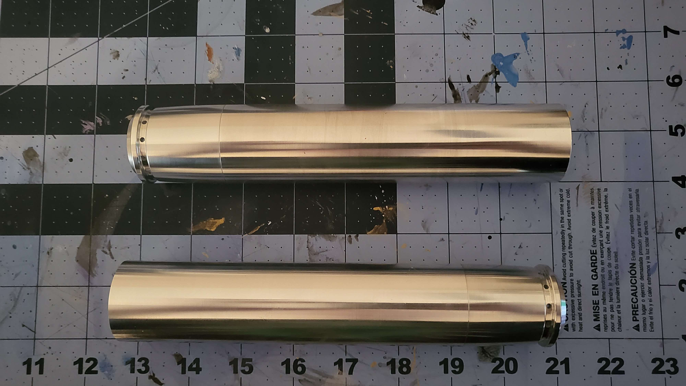
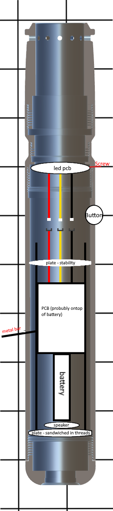
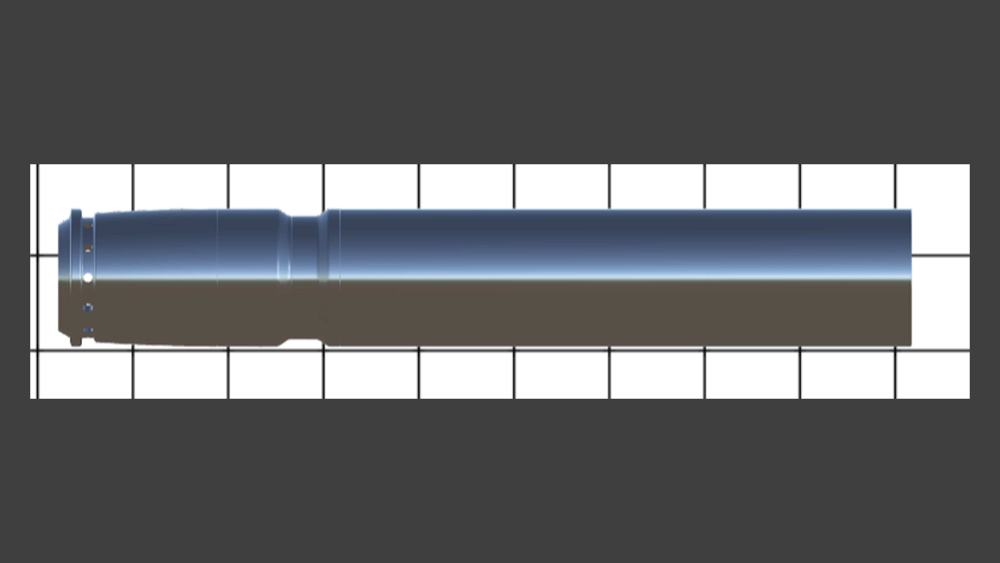
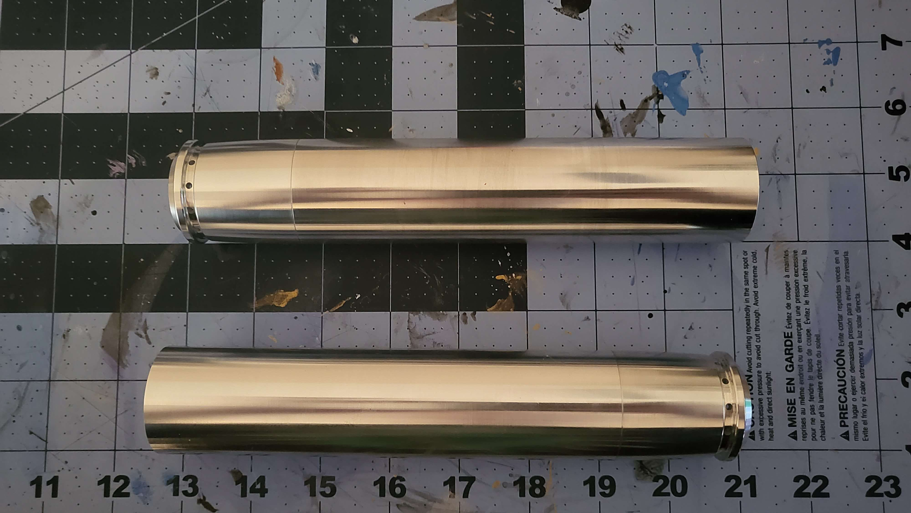
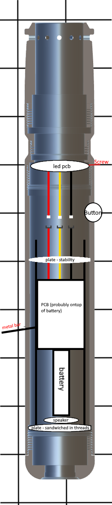
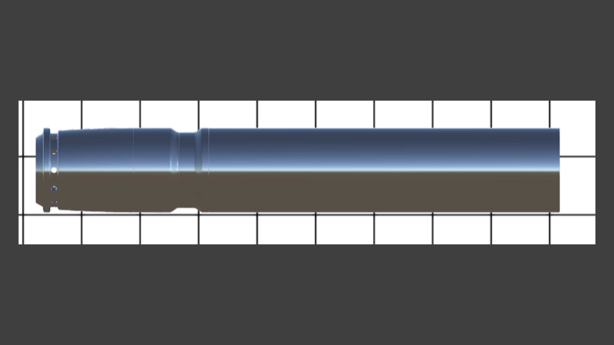

Star Wars Blaster Pistol
Han shot first
This is my custom Star Wars blaster pistol that is cruelty in progress
The main inspirations for this blaster pistol are DL-44 (Han Solo's blaster) and the (RSKF-44) Heavy blaster pistol.
The blaster will combine its main elements from these two blasters.
The main body of the blaster is made of an off brand NES zapper.
I’m using a pi pico to control the sound and lights.
Also inside the blaster is an Adafruit class D amp to amplify the sound to the speaker.
I have extra neo-pixels from other builds so I'll be using those for the lights.
This blaster is used by an ex-jedi (lightsaber build TDB) who has abandoned the order after the rise of the empire.
It has weld marks and is quite weathered to show how poor this ex-jedi is
and that the blaster is just kinda thrown together with whatever they could find.
 




